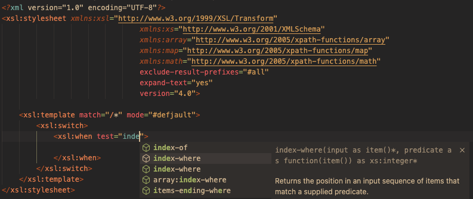

XSLT 4.0 Introduction
XSLT 4.0 currently comprises a set of draft proposals maintained by the W3C XSLT 4.0 Community group.
DeltaXignia's XSLT/XPath language extension provides full language support for the XSLT 4.0 and XPath 4.0 features implemented in Saxon 13, as documented here: type-aware auto-completion, checks, hover help and refactoring, as well as syntax highlighting.
Note that, given the independent release cycles for Saxon and the XSLT 4.0 draft, there will be differences between the implementation and the draft specification. Some parts of the specification are likely to change significantly before it is finalized.
We will endeavour to keep this extension up to date with the latest Saxon XSLT 4.0 implementation. Earlier versions of XSLT 4.0 will not be supported for auto-completion and linting.
Editing XSLT 4.0
The version attribute on the stylesheet root element controls the XSLT version supported by the linter and for auto-completion. When the version attribute on the stylesheet root element is set to 4.0, auto-completion for XSLT instructions and attributes and XPath functions will be included. In an XSLT 3.0 stylesheet, the linter reports XPath 4.0 syntax as an error.
For Saxon PE or EE 12.8 or later, run with syntax extensions, XSLT 4.0 item types - with record and
enumeration types - and xsl:note can also be enabled in XSLT 3.0 stylesheets: see
XSLT 4.0 Item Types and Notes in XSLT 3.0.

XPath files, with the .xpath extension, are always treated as XPath 4.0.
XSLT 4.0 support
The syntax highlighter, linter and auto-completion support:
- New XPath 4.0 syntax - the pipeline
->and mapping arrow=!>operators, bracedifexpressions, map constructors without themapkeyword, string templates, and the new-or-selfaxes - New item types - choice types, such as
(xs:date | xs:time), and theenum,record,fnandjnodetypes - Named item types - declared with
xsl:item-type, with checks on the names used, go to definition and find references - Function syntax -
fnand focus functions, keyword arguments such asex:area(scale := 2), optional parameters (xsl:param required="no") and partial function application - JNodes - path expressions on trees of maps and arrays, with
jtree(),jkey(),jvalue()andget(...)steps - New instructions - snippets for
xsl:switch,xsl:arrayandxsl:select, and template rules declared within anxsl:mode(enclosed modes)
Features in the XSLT 4.0 draft that Saxon 13 doesn't implement - such as extensible record types,
the deep lookup operator ?? and type tests such as ~record(...) within a
path - are reported by the linter.
Two XSLT 4.0 features have their own pages:
- XSLT 4.0: Records and Enums - auto-completion, checks and
refactoring for record and enumeration types, including
xsl:switchon an enumeration - XSLT 4.0: Documentation Notes - documenting functions and
templates with
xsl:note, for hover help and signature help
Running XSLT 4.0
XSLT 4.0 stylesheets run with Quick Run, or with an
XSLT task. Saxon needs the --allowSyntaxExtensions:on
configuration property for XPath 4.0 syntax. This is controlled by the allowSyntaxExtensions40
task property:
- auto (the default) - on, unless the Saxon jar file, or SaxonC path, is for Saxon-HE
- on - always on
- off - never on
Other Editors for XSLT 4.0
The Oxygen XML editor also provides language support for XSLT 4.0, with its own bundled Saxon implementation.
While Oxygen does need to be purchased, it has the advantage of including Saxon-EE built-in, so you will not need to purchase Saxon separately. Oxygen XML provides an integrated solution for XML developers and content authors, and hosts an array of other features.